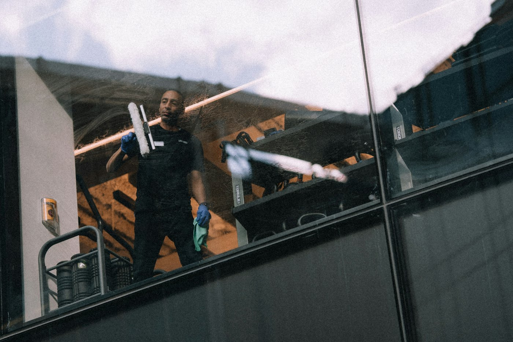
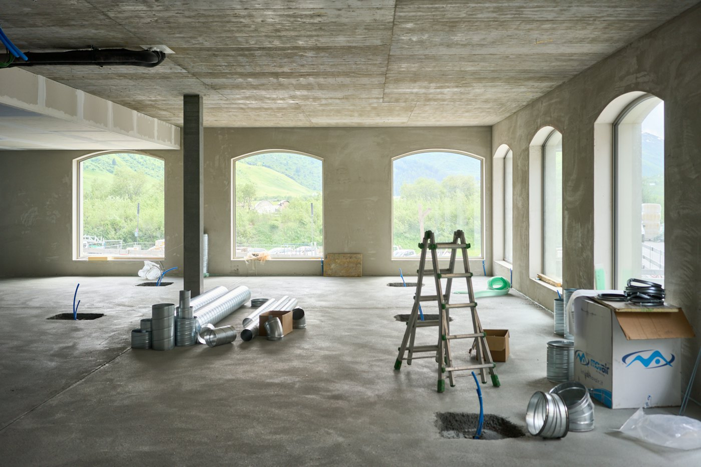

Glas- und Fensterreinigung im Schwarzwald
Wir reinigen Fenster, Wintergärten, Schaufenster und Glasfassaden streifenfrei, inklusive Rahmen und Falze, für Privathaushalte und Unternehmen.
- Rahmen, Falze und Fensterbänke inklusive
- Reinwasser-Technik für hohe Flächen
- Feste Intervalle für Schaufenster
- Für Privat und Gewerbe

- Besichtigung kostenlos
- Antwort innerhalb von 24 Stunden
- Schriftliches Angebot mit Festpreis
- Deutsch, Türkçe, English
Warum sich eine professionelle Glasreinigung lohnt
Saubere Fenster lassen mehr Licht in Ihre Räume und prägen bei Geschäften und Büros den ersten Eindruck. Im Schwarzwald setzen Pollen, Ruß von Kaminöfen und Streusalz von der Straße dem Glas besonders zu. Wer nur die Scheibe putzt, übersieht oft Rahmen und Falze, in denen sich der Schmutz sammelt und beim nächsten Regen wieder auf das Glas läuft.
Wir reinigen Glas mit Einwascher, Abzieher und Glasschaber, je nach Fläche auch mit Teleskopstangen und Osmose-Reinwasser. Das entmineralisierte Wasser trocknet ohne Kalkränder ab und erlaubt es, hohe Fenster, Glasdächer und Fassaden sicher vom Boden aus zu erreichen, wo das baulich möglich ist. Rahmen, Falze und Fensterbänke reinigen wir immer mit.
Ob Einfamilienhaus mit Wintergarten in Emmendingen, Ladenzeile in Baden-Baden oder Bürogebäude mit Glasfassade in Offenburg: Wir kommen einmalig, saisonal im Frühjahr und Herbst oder in festen Intervallen. Schaufenster reinigen wir auf Wunsch wöchentlich oder monatlich, damit Ihre Auslage immer klar zu sehen ist.
Unser Leistungsumfang
Fenster innen und außen
Streifenfreie Reinigung aller Scheiben mit Einwascher und Abzieher, auch bei Sprossenfenstern und bodentiefen Verglasungen.
Rahmen, Falze, Fensterbänke
Feuchte Reinigung von Rahmen und Falzen sowie innen- und außenliegenden Fensterbänken, damit kein Schmutz nachläuft.
Wintergärten und Glasdächer
Innen- und Außenreinigung von Wintergärten, Terrassenüberdachungen und Glasdächern, schonend für Dichtungen und Beschichtungen.
Dachfenster und Oberlichter
Reinigung von Dachfenstern, Lichtkuppeln und Oberlichtern, die sich im Alltag kaum erreichen lassen.
Schaufenster im Intervall
Regelmäßige Reinigung Ihrer Schaufenster und Glastüren im festen Rhythmus, auf Wunsch vor Ladenöffnung.
Glasfassaden und Trennwände
Reinigung von Fassadenverglasungen, Glasbrüstungen und Glastrennwänden in Bürogebäuden, Praxen und Gewerbeobjekten.
Reinwasser-Technik in der Höhe
Teleskopstangen mit Osmose-Reinwasser für hohe Fenster und Fassaden, wo diese Technik baulich geeignet ist.
Rückstände entfernen
Entfernen von Farbspritzern, Etiketten, Insektenschmutz und Kalkablagerungen mit passenden Werkzeugen, ohne das Glas zu verkratzen.
Für wen wir Glas- und Fensterreinigung übernehmen
- Privathaushalte und Eigentümer
- Einzelhandel und Gastronomie
- Büros und Arztpraxen
- Hausverwaltungen und Wohnanlagen
- Hotels und Ferienwohnungen
- Gewerbe- und Industriebetriebe
So läuft es ab
Anfrage starten- 1
Besichtigung
Wir sehen uns Fensterflächen, Höhen und Zugänge an und klären, welche Technik sich eignet.
- 2
Angebot
Sie erhalten ein schriftliches Angebot mit Festpreis oder Stundensatz, einmalig oder für feste Intervalle.
- 3
Reinigung
Wir reinigen Glas, Rahmen und Falze in fester Reihenfolge und schützen Böden und Möbel mit Abdeckungen.
- 4
Abnahme
Wir prüfen die Scheiben gemeinsam mit Ihnen im Gegenlicht, damit keine Streifen zurückbleiben.
Was kostet eine Fensterreinigung?
Der Preis richtet sich nach Glasfläche, Art der Fenster und Zugänglichkeit. Nach der Besichtigung erhalten Sie einen schriftlichen Festpreis.
Für Schaufenster und Gewerbeobjekte erstellen wir gern ein Angebot für feste Reinigungsintervalle.
Festpreis anfragen- Fensterart und Anzahl
- Sprossenfenster, Dachfenster und große Schiebeelemente brauchen unterschiedlich viel Zeit pro Quadratmeter Glas.
- Höhe und Zugang
- Hohe Fenster, Glasdächer und Fassaden erfordern Teleskop- und Reinwassertechnik oder zusätzliche Sicherung.
- Grad der Verschmutzung
- Lange nicht gereinigte Scheiben, Baustaub oder Farbreste verlangen mehr Arbeitsgänge als eine Intervallreinigung.
- Intervall und Termin
- Feste Intervalle senken den Aufwand pro Einsatz, während Termine früh morgens oder am Wochenende in die Kalkulation einfließen.
Im ganzen Schwarzwald für Sie da
Wir reinigen Glas und Fenster im gesamten Schwarzwald, unter anderem in Freiburg, Offenburg, Emmendingen, Baden-Baden, Waldkirch, Titisee-Neustadt und Freudenstadt.
Häufige Fragen
Sind Rahmen und Fensterbänke im Preis enthalten?
Ja. Rahmen, Falze und Fensterbänke gehören bei uns zur normalen Fensterreinigung und werden immer mitgereinigt.
Was ist Reinwasser- oder Osmosetechnik?
Dabei wird Leitungswasser per Umkehrosmose entmineralisiert. Das reine Wasser löst Schmutz und trocknet ohne Kalkflecken, sodass wir hohe Flächen mit Teleskopstangen vom Boden aus reinigen können.
Wie oft sollten Fenster gereinigt werden?
Für Privathaushalte empfehlen wir zwei bis vier Reinigungen im Jahr. Schaufenster und Eingangstüren brauchen je nach Lage eine wöchentliche oder monatliche Reinigung.
Reinigen Sie auch bei Regen oder Kälte?
Leichter Regen ist meist kein Problem. Bei Frost verschieben wir die Außenreinigung, weil das Wasser sonst auf Glas und Rahmen gefriert.
Müssen wir bei der Reinigung zu Hause sein?
Für die Innenreinigung brauchen wir Zugang zu den Räumen. Reine Außenarbeiten wie Fassaden oder Schaufenster erledigen wir nach Absprache auch ohne Ihre Anwesenheit.
Kann ich die Fensterreinigung steuerlich absetzen?
Ja. Privathaushalte können nach § 35a EStG 20 % der Arbeitskosten direkt von der Steuerschuld abziehen, höchstens 4.000 Euro pro Jahr. Voraussetzung sind eine Rechnung und die Zahlung per Überweisung.
Passende Leistungen

Unterhaltsreinigung
Wir halten Büros, Praxen, Kanzleien und Ladenflächen dauerhaft sauber, nach einem festen Reinigungsplan und zu Zeiten, in denen Ihr Betrieb nicht gestört wird.
Mehr erfahren
Bauendreinigung
Nach Rohbau, Ausbau oder Renovierung machen wir Ihr Objekt übergabefertig: staubfrei, streifenfrei und pünktlich zum Abnahmetermin.
Mehr erfahren
Grund- und Umzugsreinigung
Wir reinigen Wohnungen und Häuser einmalig und gründlich, ob vor dem Einzug, nach dem Auszug oder nach einer Renovierung. So können Sie der Wohnungsübergabe gelassen entgegensehen.
Mehr erfahrenSagen Sie uns, was sauber werden soll.
Beschreiben Sie kurz Objekt und Leistung. Wir melden uns innerhalb von 24 Stunden mit einem Terminvorschlag.
- Telefon und WhatsApp
- +49 162 9763733
- Erreichbar
- Montag bis Samstag, 7 bis 19 Uhr
- Einsatzgebiet
- Schwarzwald und Umgebung